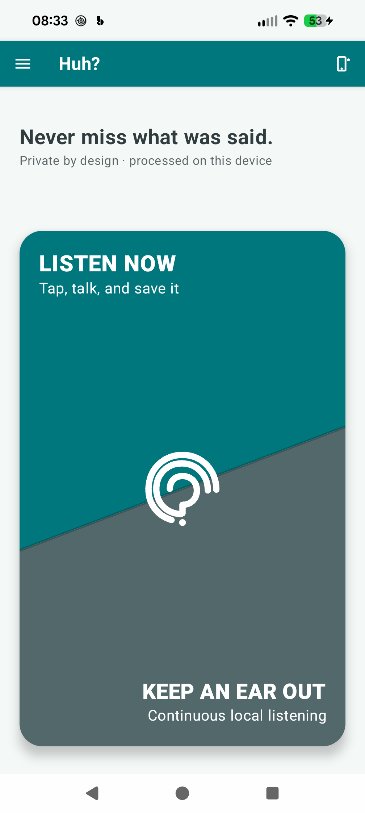
1
Home
Choose Listen Now for an intentional one-time capture.
A screen-by-screen map of how people capture, revisit, understand, and configure private conversations. Screens were captured from the current app on the Pixel target device.
Each row is one user goal. Cards run left to right and show the screen, the action that advances the journey, and the expected outcome. A screenshot may appear in several journeys when the actual product path overlaps.
Pixel 8 Pro · light theme · current debug build
Captured August 29, 2026
The focused, foreground path from opening the app to a saved local transcript.

Choose Listen Now for an intentional one-time capture.
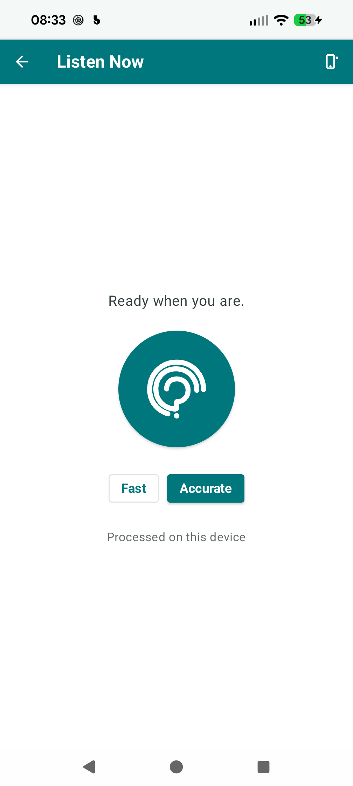
Select Fast or Accurate, then tap the central listening control.
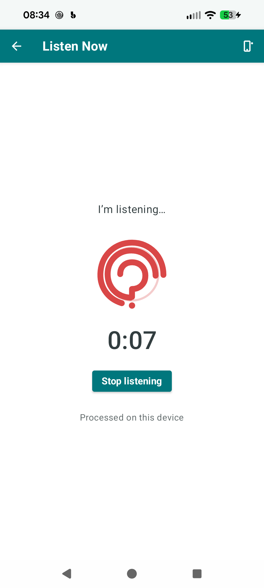
The timer and red mark confirm capture. Tap Stop listening when finished.
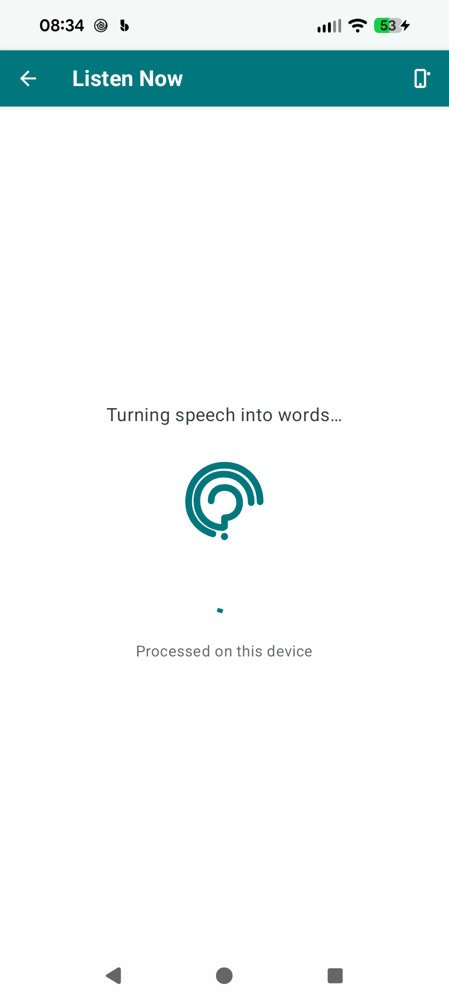
Whisper processes the recording locally while the progress state remains visible.
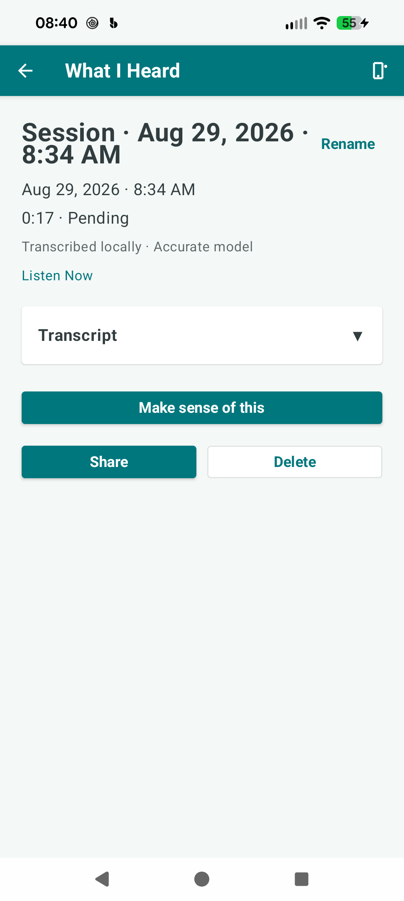
The saved session exposes its transcript as an expandable section and offers optional inference.
Sessions remain available from the drawer and keep transcript content compact by default.
Open the navigation menu from the top-left icon.
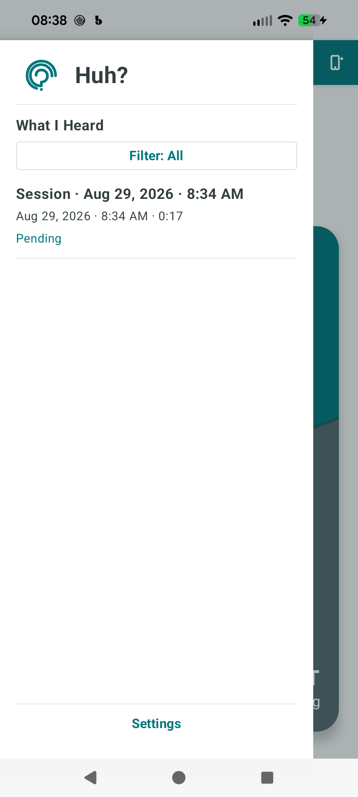
Filter the local session history and select the conversation to revisit.
Review provenance and status, expand the transcript, or ask the selected AI method to make sense of it.
A persistent local listener captures conversation windows while the app is foregrounded or backgrounded.
Choose Keep an Ear Out.
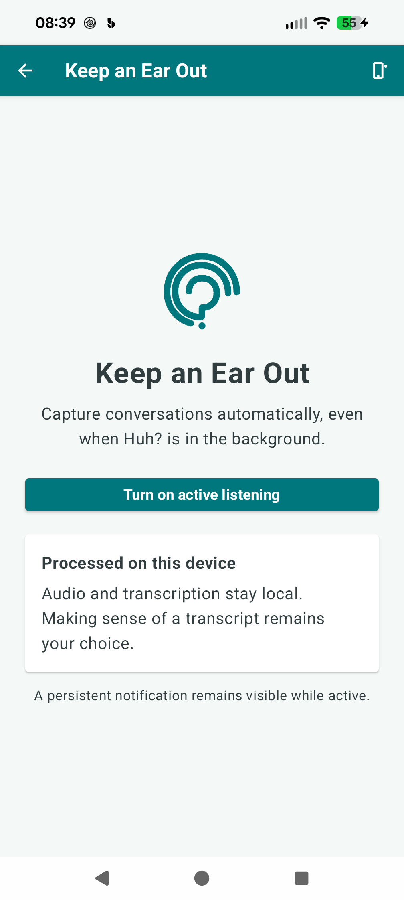
The screen explains background behavior, local processing, and the persistent notification before activation.
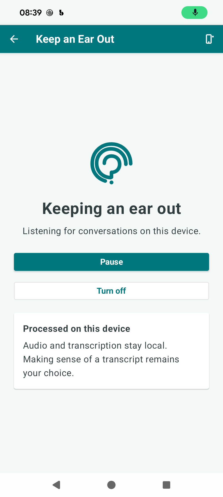
Pause temporarily or turn the service off. Detected conversations become local sessions.
Completed conversation windows appear with other sessions in What I Heard.
The device action is globally available from the app bar.
Tap the device icon from Home or another top-level screen.
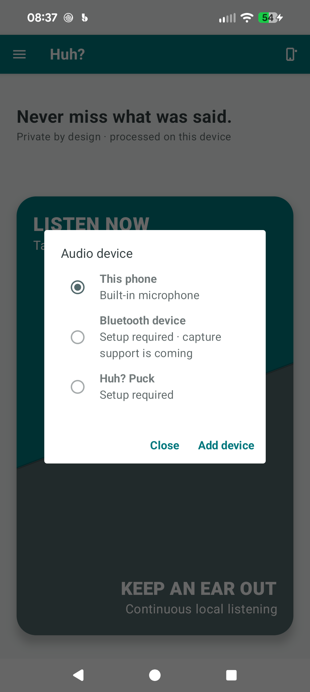
This phone is available. Bluetooth honestly identifies capture as forthcoming; Puck requires setup.
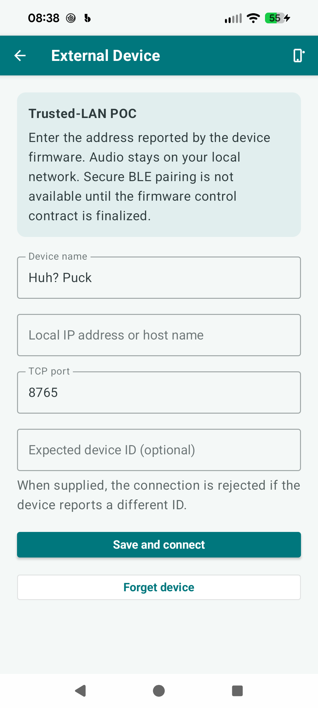
Enter the trusted-LAN endpoint details reported by compatible firmware.
Users can prioritize local-network inference while retaining the bundled on-device fallback.
Settings is anchored at the bottom of the navigation drawer.
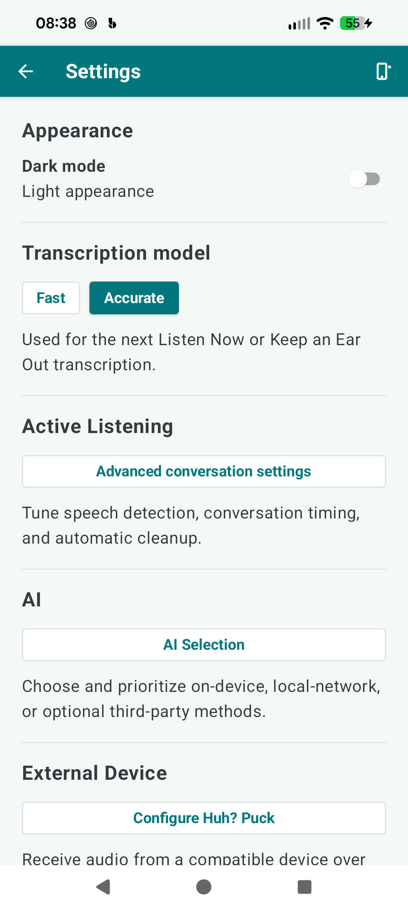
The settings overview groups appearance, transcription, active listening, AI, and external-device controls.
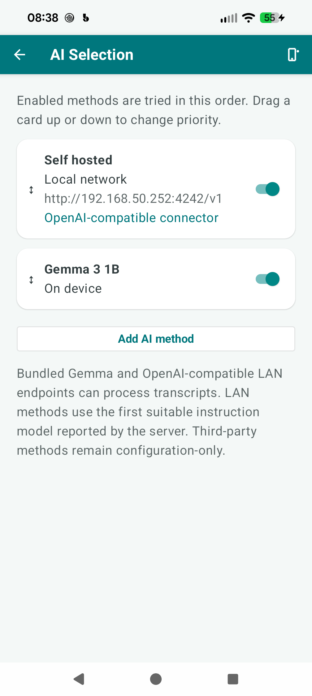
Enable methods and drag to define fallback order. Gemma and OpenAI-compatible LAN endpoints execute today.
Make sense of this tries enabled providers in the chosen order and adds an expandable inferred summary.
The captured provider screen reflects a private-LAN example. No cloud service or analytics is introduced by this journey.
The current trusted-LAN proof-of-concept is explicit about its security boundary.
Select Configure Huh? Puck under External Device.
Name the device, enter its local address and port, and optionally pin its reported device ID.
Once configured, choose Huh? Puck from the global audio-device picker.